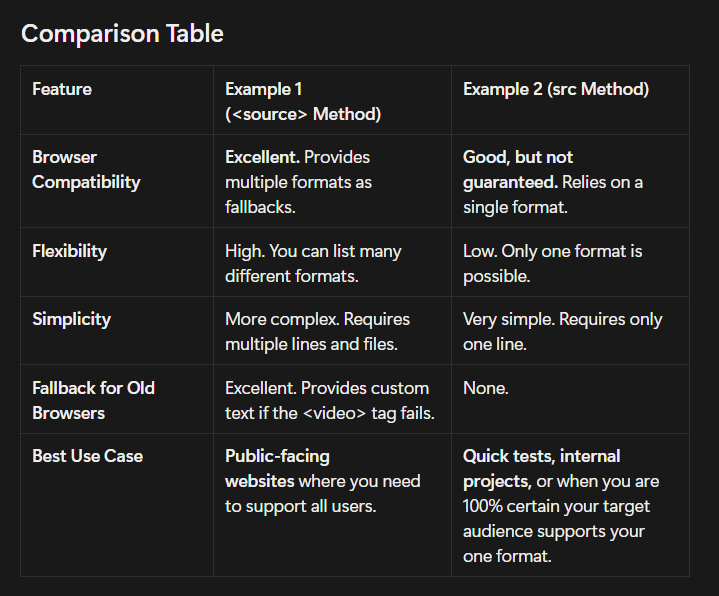

Day 5 — Deploy Your First Project
The Core Problem
How can we embed video and audio into a webpage in a standardized, native, and plugin-free way? We need a universal system that works on every modern browser, from a desktop PC to a mobile phone, without requiring the user to install anything extra.
The Logical Solution:The HTML <video> and <audio> tag
The solution was to create dedicated HTML tags whose sole purpose is to embed and control media.
The Video and Audio Tags
What they are:
- <video>: Used to embed video files into a webpage.
Example:
<video src="LINK" >
</video>
<audio>: Used to embed audio files into a webpage.
Example:
<audio src="Link">
</audio>
controls, autoplay, loop, and muted.
Attributes: controls, autoplay, loop, muted
What they are:
- controls: Adds play, pause, and volume buttons.
- autoplay: Starts playing the media automatically when the page loads.
- loop: Makes the media start over again after it finishes.
- muted: Starts the media in a muted state.
Example (Video):
<video width="320" height="240" src="movie.mp4" type="video/mp4"
controls autoplay loop muted>
</video>
Example (Audio):
<audio src="audio.mp4" type="video/mp4"
controls autoplay loop muted>
</audio>
Other Syntax of <video> and <audio> tag and why it is most used
Problem #1: Not all browsers support the same video formats.
Chrome might prefer the modern .webm format, while Safari on an iPhone might only support .mp4. If you only provide one src, some of your users won't be able to see your video.
The Solution: The <source> Element
Instead of putting the src on the <video> tag itself, you can provide multiple formats inside the tag using the <source> element. The browser will go down the list and play the first one it supports.
Example (Video):
<video width="320" height="240" controls autoplay loop muted>
<source src="movie.mp4" type="video/mp4">
Your browser does not support the video tag.
</video>
Example (Audio):
<audio controls autoplay loop muted>
<source src="song.mp3" type="audio/mpeg">
Your browser does not support the audio element.
</audio>
Problem #2: Your video is not accessible.
Users who are deaf or hard of hearing can't understand your video. Users in a noisy environment (or a quiet office) can't listen to the audio. Users speaking another language won't understand it.
The Solution: The <track> Element
The <track> element allows you to add timed text tracks, such as subtitles or captions. It's a self-closing tag that points to a special text file, usually in WebVTT (.vtt) format.
Example:
<video controls>
<source src="video.webm" type="video/webm">
<source src="video.mp4" type="video/mp4">
<!-- English Captions for the hearing impaired -->
<track src="captions_en.vtt" kind="captions" srclang="en" label="English">
<!-- Spanish Subtitles for translation -->
<track src="subtitles_es.vtt" kind="subtitles" srclang="es" label="Español">
</video>
The Robust & Professional Method (<source>)
<video width="320" height="240" controls>
<source src="movie.mp4" type="video/mp4">
<source src="movie.ogg" type="video/ogg">
Your browser does not support the video tag.
</video>
How It Works (The Logic)
This code gives the browser a list of options. The browser will read this list from top to bottom and play the very first video format it understands.
Step 1
The browser first sees <source src="movie.mp4" ...>. It asks itself, "Can I play MP4 video?"
-
If the answer is YES, it loads
movie.mp4, plays it, and completely ignores the rest of the<source>tags. - If the answer is NO, it moves to the next option.
Step 2
The browser then sees <source src="movie.ogg" ...>. It asks, "Okay, can I play Ogg video?"
-
If the answer is YES, it loads
movie.oggand plays it. - If the answer is NO, it has no other options.
Below I have attached a Table from the Notion Notes for better understanding ⇓
